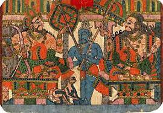
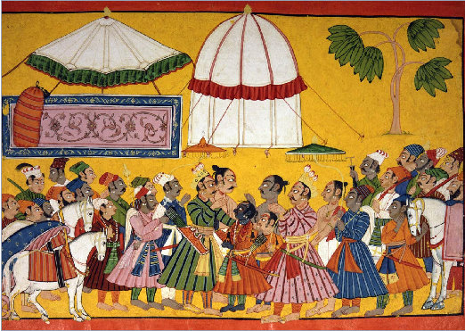
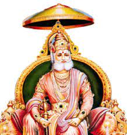
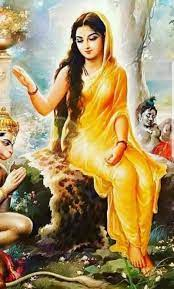
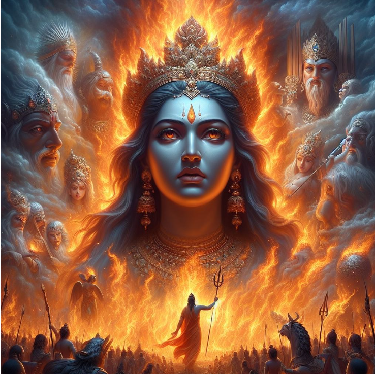

Mithi, also known as Mithila, is the capital city of the kingdom ruled by King Janaka. It is famed for its prosperity, culture, and scholarly traditions. Mithi serves as the backdrop for several significant events in the Ramayana, including Sita's birth, her swayamvara, and Rama's encounter with Shiva's bow. The city is revered as a symbol of virtue, knowledge, and spiritual enlightenment.
Udavasu
Nandhivardhana
Suketu
Devarata
Brihadradha
Mahavira
Sudhruti
Drishtaketu
Haryasva
Maru
Pratindhaka
Kirtirata
Devamidha
Vibudha
Mahidhraka
Kirtiratha
Maharoma
Maharoma
Swarnaroma
Hrasvaroma
Janaka Maharaja; Mithula king

King Janaka, also known as Videha or Seeradhwaja, is renowned as the father of Sita and the ruler of Mithila. He is revered as a wise and just monarch, known for his unwavering commitment to righteousness and truth. Janaka's renowned test of breaking Lord Shiva's bow plays a pivotal role in the Ramayana, leading to Rama's marriage to Sita.
Kusadhwaja

Kusadhwaja, also known as Kushadhvaja, is the brother of Janaka and the ruler of Videha. He is revered for his wisdom, valor, and devotion to dharma. Kusadhwaja plays a significant role in the Ramayana as the uncle of Sita and a trusted ally of Lord Rama during the events of Sita's swayamvara and subsequent exile.
Sita

Sita, revered as the divine goddess and consort of Lord Rama, embodies the epitome of grace, virtue, and devotion. Born from the earth, she is revered as the daughter of Mother Earth herself. Sita's unwavering love, loyalty, and sacrifice for her divine husband, Lord Rama, symbolize the eternal bond between the divine feminine and masculine energies. Her abduction by the demon king Ravana serves as a cosmic test of virtue, leading to Rama's heroic quest to rescue her and restore cosmic balance. Sita's purity, resilience, and unwavering faith in dharma elevate her to the status of a goddess, inspiring devotion and reverence among devotees worldwide.

Sita devi agni pariksha: AI generated; openaimaster